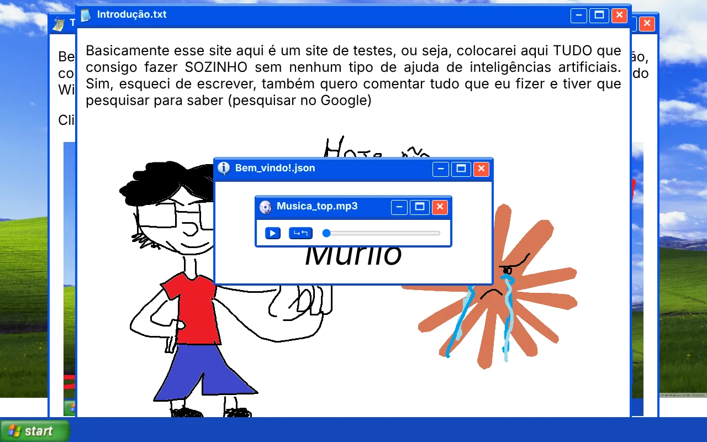

Quintal do Murilo
Meu laboratório de HTML, CSS e JavaScript, feito do zero só com o Google e muita tentativa e erro. Imita um sistema antigo, com janelas que parecem programas de verdade. Documento cada etapa no LinkedIn, inclusive os bugs.
- e1d4a70janelas arrastáveis com o mouse e botões de fechar que funcionam
- 9b3c2f8menu Iniciar estilo Windows 7 com sons de abrir e fechar
- 47a0e9dplayer de música customizado
- c8f61b2fix: nomes de arquivo com maiúsculas que só quebravam em produção
- 2d95e03o post sobre ele passou de 116 mil impressões no LinkedIn
HTML · CSS · JavaScript · nenhuma linha de IA
